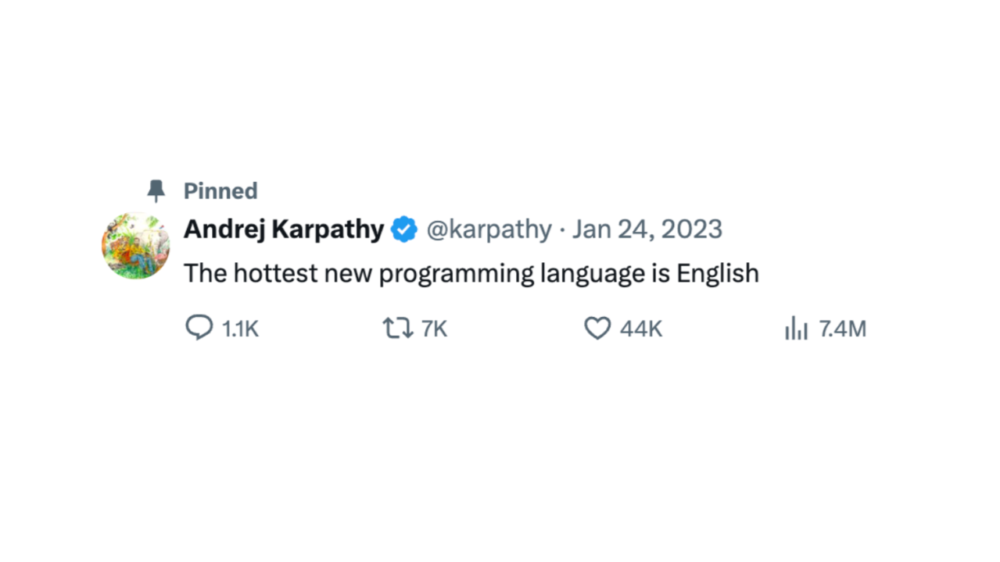
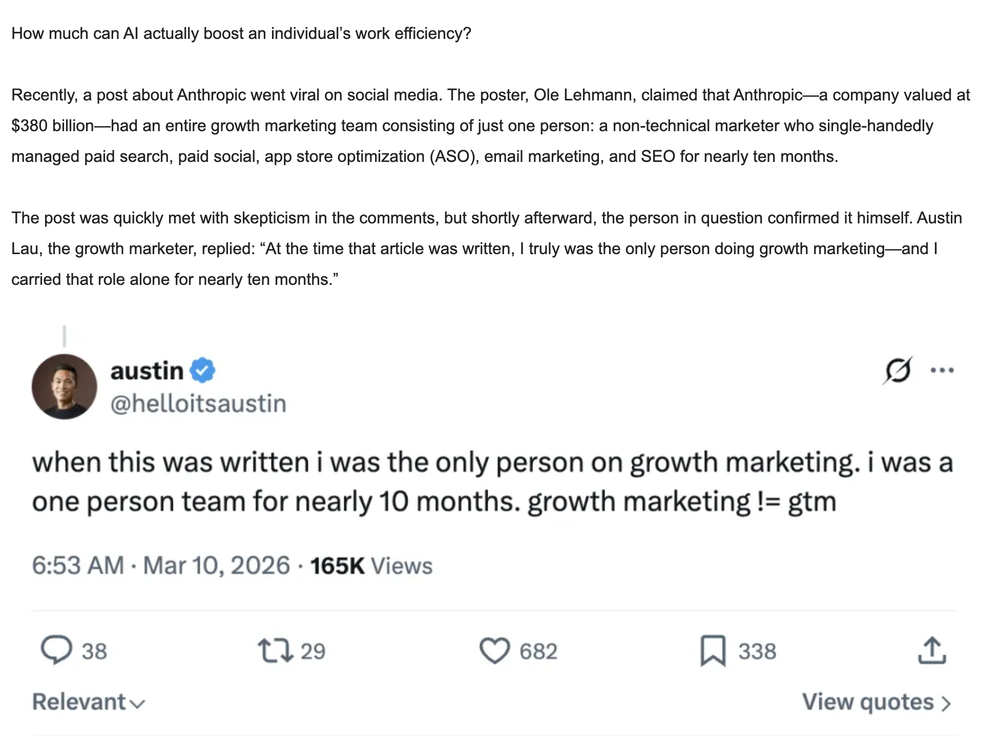
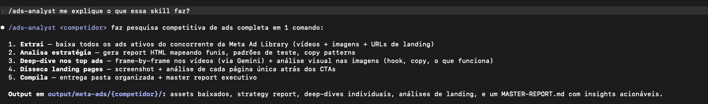
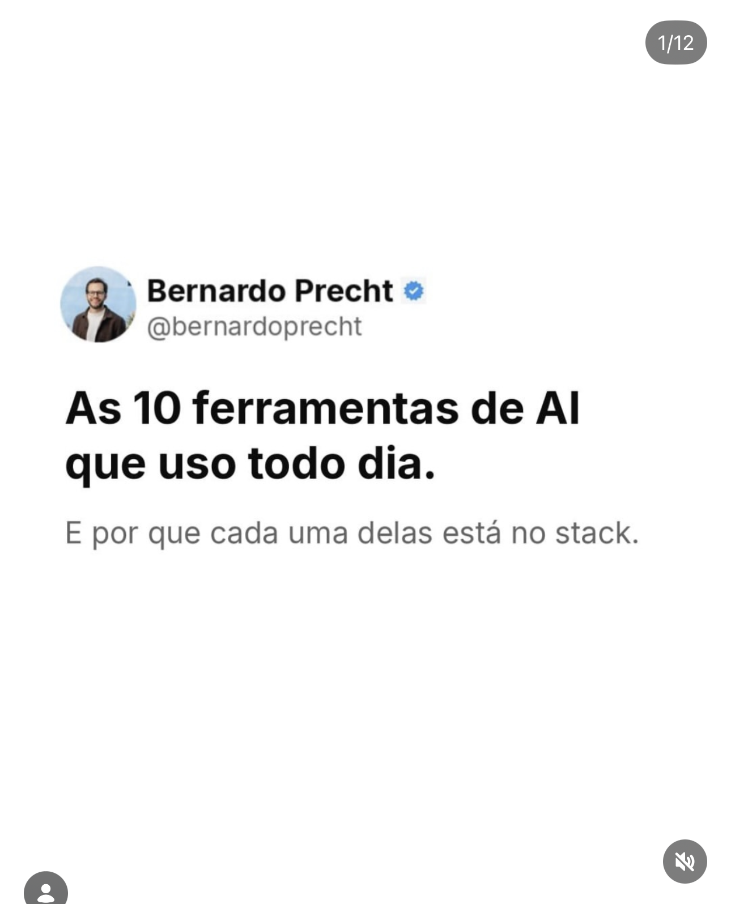
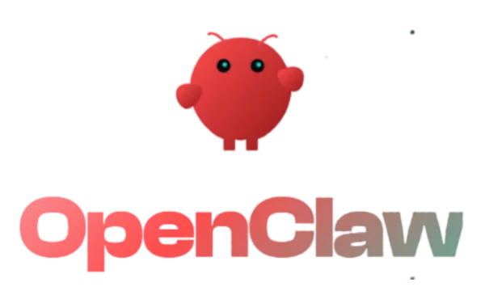

AI & GTM
Lições aprendidas e experimentos.
4 silos viraram 1 GTM Engineer

Em 2026, quem sabe escrever bem
sabe “programar”.
Cada ponto são ~3.2 milhões de pessoas
2.500 pontos = 8.1 bilhões de humanos. Cor = interação mais avançada com AI, Fev 2026.
Innovation = Invention + Distribution
“Don’t have clients — have hostages.” O moat mais forte é switching cost tão alto que o cliente não consegue sair.
Rampell — FINANCE 385.2“Distribution is increasingly important with AI commoditizing coding.”
Kupor — E&VC, StanfordBem-vindo à era da abundância.

Quando toda empresa é uma empresa
de tecnologia, o diferencial é saber
qual tecnologia construir.
Se toda empresa é uma empresa de tecnologia, opere como uma. Sistemas escaláveis, segurança desde o dia 1, sprints com escopo claro. O que diferencia ansiedade patológica com AI de progresso real é clareza e alinhamento do que vai ser entregue.
Não confunda dopamina
com progresso.
FUN
- Criar coisa nova com AI
- Testar 10 ferramentas por semana
- Automatizar o que ninguém pediu
- Postar “look what AI did”
ROI
- Eliminar gargalo real do P&L
- Reduzir custo de uma linha da DRE
- Acelerar receita existente
- Escalar o que já funciona
“Technology will cease being a differentiating strategy factor. Plain business skills will become more valuable.”
Dodson — STRAMGT 355.3, Stanford“Devs ficaram 19% mais lentos com AI mas achavam que estavam 20% mais rápidos.”
METR Study, 2025Fugindo do óbvio com AI.
Casos reais de aquisição — do criativo ao agente autônomo.
Da inspiração à execução em 1 comando.
Busca no Meta Ad Library → download em JSON → adaptação à linha editorial → geração via MCP Higgsfield.

Tudo isso vira uma skill no CLI.
Um comando faz scraping, análise, deep-dive nos top ads e entrega master report. Reuso em qualquer concorrente.

Estamos muito perto da AI ser
o motor de UGC.
Fugindo do óbvio com AI.
Casos reais de aquisição — do criativo ao agente autônomo.
Operação do gerenciador
e otimização de campanhas.
Integração MCP Pipeboard
Dois MCPs, duas intenções
Meta MCP pra entender. Pipeboard pra agir. Use os dois.
- · Anomaly detection & performance trends
- · Industry benchmarks & opportunity score
- · Diagnóstico de pixel/dataset
- · Catálogo completo (feed rules, products)
- · Bulk create/update de ads, ad sets, campaigns
- · Upload de imagens, vídeos & criativos carousel
- · Audiências custom, lookalike, CAPI
- · Lead forms, value rules, budget schedules
Fugindo do óbvio com AI.
Casos reais de aquisição — do criativo ao agente autônomo.
frontend-design skill + 21st.dev
LP sem cara de AI slop. Design system real, não template genérico.
Fugindo do óbvio com AI.
Casos reais de aquisição — do criativo ao agente autônomo.
O que você desbloqueia além do chat.
Fugindo do óbvio com AI.
Casos reais de aquisição — do criativo ao agente autônomo.
Content System: da descoberta à publicação.
Uma squad de agentes AI que opera seu conteúdo com aprovação humana em cada etapa crítica.
vídeos virais
relevância, fit
via Telegram
qual avança
de carrossel
roteiro A, B ou C
legenda
automaticamente
Por baixo do capô: como a máquina funciona.

Em ~6 semanas: 0 → 25 mil.
Mesma orquestração que você acabou de ver. Antes e depois do meu perfil.
Construindo um orquestrador inteligente.
Você pode ter os melhores especialistas do mundo
trabalhando no seu time.
Fugindo do óbvio com AI.
Casos reais de aquisição — do criativo ao agente autônomo.
Migrei pro Claude Code Channels + VPS

O que é um agent?
A definição prática — sem mistério.
Conhecimento compartilhado entre os times.
Crie uma estrutura onde você passa a conversar pelo CLI com o seu time — e bebe da inteligência da sua empresa em linguagem natural.
Onde jogar?
Comece pelo quadrante de menor risco. Otimize o que já existe antes de diversificar.
O que fazer agora?
Urgente + Importante = resolva com humano. Importante + Não urgente = construa com AI. Não importante = ignore.
Por onde começar?
Impact × Confidence × Ease. Priorize quick wins: alto impacto, alta confiança, fácil de implementar.
[0-10]
[0-10]
[0-10]
[I × C × E]
As ferramentas que eu realmente uso.
Uma linha de complexidade — do mais acessível ao mais poderoso.
O que eu pago para operar como tech.
Stack completo de uma pessoa. Comparado ao custo de um estágiário — absurdo.
“Be the most AI-enabled version of yourself that you could be.”
“The best leaders are those who can convince rational people to do irrational things.”